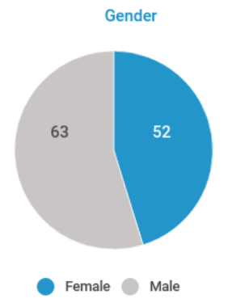

Quick Tips for Visualising Data
Created by Centre for Humanitarian Data / @humdata
Press right on your keyboard or swipe right to navigate
In this short lesson we will go through best practices for creating visualising using COVID-19 data and how to create a few simple charts in Excel.
The choices we make when we visualise data influence how people see, understand, and react to the data.
Click through to learn best practices for making responsible data visualisations with COVID-19 Data.
How much time do you have to learn?
- Fifteen Minutes: Go through our step-by-step guide and demo videos for making charts in Excel.
Why Do We Visualise Data?
We Visualise to Explore
We visualise data to explore the data, uncover different relationships and determine the most meaningful information to highlight or analyse further. The audience for this type of visualisation is often the analyst.
This type of visualisation allows the analyst to spot trends or outliers and develop questions for further exploration.
We Visualise To Explain
We visualise data to explain a phenomenon we are seeing in the data. Explanatory data visualisation can be used to inform, persuade and engage an audience but critically, this type of visualisation requires a well defined audience and a clear objective. This is the type of visualisation we are going to be focussed on here.
How to Explain with Visualisation
To explain a phenomenon first ask yourself:
- What am I trying to say? What is the specific phenomenon that you are trying to explain and how will a visualisation help you do that in a way that narrative alone could not.
- Who am I trying to say it to? Is the visualisation you are creating meant for a public website, a presentation to a group of senior managers or a report for field programme managers? This can determine what data can best support your message, the level of granularity, etc.
Understand the Data
Before you start you have to understand the data
Before digging into COVID-19 data visualisation, it is important to spend a bit of time understanding what can - and what cannot - be said based on this data.
The first step is to understand the definitions of the data included in your dataset. To do this:
- Check the meta-data
- Check the data dictionary
Epistomological Terminology
- Prevalence in epidemiology is the proportion of a population affected by a medical condition at a specific time. People who have died or recovered from COVID-19 are no longer part of the population with COVID-19.
- Incidence in epidemiology is a measure of the probability of occurrence of a given medical condition in a population within a specified period of time.
- Cumulative Cases are also reported in COVID-19 data. These are total confirmed cases up to a given point in time, without subtracting people who have recovered or died. These numbers over time only get larger and larger as new cases are added.
Design Reponsibly in a Crisis
Designing Responsbily
The way that we communicate about this epidemic has the potential to shape their view of risk and safety.
The design choices we make will influence how our audience interprets our underlying data. There are no hard and fast rules for making responsible design choices. The following are a few things to consider when creating COVID-19 data visualisation.
ASK - ANSWER - ACT
A data exercise should start with a question. This question guides the analysis we do to come to an answer that hopefully influences actions. When we visualise data, it is important to keep this simple mantra in mind.
- ASK: What am I trying to say with this visualisation? What is my message? What is the question that our auidence has that we are trying to answer?
- ANSWER: What is the answer to our question and how can we communicate that answer clearly? Are our design choices obscuring the message?
- ACT: Whose actions am I trying to influence through my visualisation? Am I communicating data in a way that can help them act?
Choose Colours Carefully
We associate red with danger. A map full of a overlapping red circles, or ever scarier shades of red, will communicate danger and may distract from other messages. Consider choosing more neutral colours when creating COVID-19 visualisations.

Be Careful with Absolute Numbers
When comparing across counrties, explore the difference in the visualisation when using absolute numbers (total # confirmed cases) and relative numbers (# of confirmed cases per x thousand people). With absolute number, the result may end up visualising population density rather than meaningful new information.

Source Kenneth Field
Pay attention cropping your axis
Cropping an axis can remove important context from the visualisation. In the case below (left), the cropped axis may unintentionally make the fatality rate seems worse than it is by obscuring the visual power of the percentage of people who survive.

Source Andy Cotgreave
Consider Using a Logarithmic Scale
When visualising a variable growing exponential, a linear scale can obscure important details. For example, the US and Italy look like they are on similar trajectories on the linear scale whereas it is clear with the logarithmic scale that COVID-19 cases are growing faster in the US.

Source Kenneth Chang
Embrace Complexity
There is a great deal of complexity around COVID-19 - this complexity does not go away in the data. Try to find ways to convey that complexity through your visualisation. For example, adding the simple phrase ‘we know of x cases’ helps to convey the critical message that the data we have is incomplete.

Source Lisa Charlotte Rost
Choosing the Right Visualisation
Relationship Types
The way that we visualise information should follow from the type of relationships between different variables that we want to highlight.
Over the next through slides, we will go through the type of charts that you can use to visualise the following relationships:
- Change Over Time
- Magnitude
- Ranking
- Distribution
- Part of a Whole
- Spatial
Change Over Time
The following charts help us to give emphasis to changing trends over time.

Source Andy Kriebel & The Financial Times (Press down to learn more.)
Line Graph
A line graph will work for most time series data - whether you have a lot of data points or just a few. You can also mark important events - i.e. when stay at home orders went into effect. Line charts are best for visualising trends.

Source: Our World in Data
Bar Chart
Bar charts for time series work best when you’re dealing with distinct points in time (i.e. days, months or years) - for example the number of confirmed cases reported daily.

Source: Worldometer
Area Graph
Area graphs are useful for comparing multiple variables changing over an interval. In the case of COVID-19, a area graph may be useful for conveying both how to total number of cases has increased as well as how the cases are distributed over different countries or regions

Source: Our World in Data
Magnitude
The following charts are option when the primary relationship you want to show is a size comparisons.

Source Andy Kriebel & The Financial Times (Press down to learn more.)
Bar Graph
A bar chart is a great option for size comparison. Remember to always start at zero on the axis!
Source: Summan SAS
Ranking
Use these types sof visualisations when position in an ordered list is more important.

Source Andy Kriebel & The Financial Times (Press down to learn more.)
Bar & Column Chart
Ordered bar and column charts are excellent for showing position and comparing - for exmaple - a list of COVID-19 cases by country. Fun fact a 'bar chart' with vertical bars is called a column chart.

Source:
Distribution
Show the values in the dataset and how often they occur. The shape (or the skew) of a distribution can be a memorable way of highlighting the lack of uniformity of equality in the data. For example, case mortality rate.

Source Andy Kriebel & The Financial Times (Press down to learn more.)
Histogram
ADD DETAILss

Source:
Part of a Whole
Show how a single entity can be broken down into its component elements. If the reader is primarily interested in the size of the components, considera magnitude-type chart instead.

Source Andy Kriebel & The Financial Times (Press down to learn more.)
Pie Chart
Use a pie chart to compare two, maybe three, data points especially if one of the data points is significantly larger than the other(s).
|

Source: WHO oPt Situation Report |
|
Stacked Bar
The stacked bar chart is a way to visualise more that one categorical variable. For example - if you want to visualise
Source:
How to Create your own Visualisations
Do it yourself
Now its time to create your own visualisation. Together, you have learned why we create visualisation, some conideration to make when visualising COVID-19 data and how to use various chart to highlight and communicate different relationships between variables.
Now its time to give it a go. In this final section, we will walk through how to create a logarithmic line graph, a bar chart and a simple shaded map. For each visualisation we have included walk-through step-by-step guides & accompanying screencasts.
Create A Line Graph in Excel
Download our Step-By-Step Guide to Creating a Logarithmic Line Graph
- structure your data
- insert line graph
- explore using a logarithmic scale
- customise the design
Press down to walk through the process
Structure your Data: Click on the video below to see how you should filter and structure your data in order to create a line chart for Afghanistan.
Insert a Line Graph: Click on the video below to see how to insert a line graph.
Explore using a Logarithmic Scale: Click on the video below to learn how to format your axis using a logarithmic scale.
Customise your Design: Click on the video below to customise your chart.